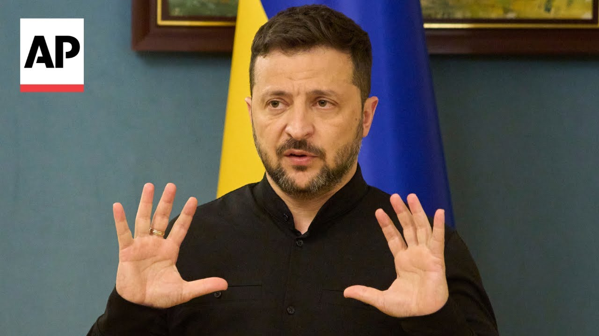

【泽连斯基称赞乌克兰安全局在俄罗斯领土上的“出色行动”】
Summary: The head of Ukraine's Security Service reported a successful operation targeting Russian military equipment used against Ukraine, causing significant and deserved losses, with meticulous planning over 1.5 years and an office near the Russian FSB.
摘要： 乌克兰安全局局长报告了一次成功的行动，目标是用于攻击乌克兰的俄罗斯军事装备，造成了重大且应得的损失，经过一年半的精心策划，行动办公室靠近俄罗斯联邦安全局。

⏱️ Estimated Reading Time: 1 min
There was just a report by the head of the Security Service of Ukraine, Vasyl Malyuk.
乌克兰安全局局长瓦西尔·马柳克刚刚发布了一份报告。
A brilliant operation was carried out on enemy territory exclusively against military targets, against the very equipment that was used in strikes against Ukraine.
在敌领土上执行了一次出色的行动，专门针对军事目标，即用于袭击乌克兰的装备。
Russia's losses are very tangible and their losses are absolutely fair and deserved.
俄罗斯的损失非常明显，这些损失绝对公平且应得。
I thank the security service, personally General Malyuk, and everyone who was involved in the operation.
我感谢安全局，特别是马柳克将军，以及所有参与行动的人员。
The operation was prepared for more than a year and a half.
这次行动准备了一年半多的时间。
The planning, the organization, all the details were perfectly prepared.
规划、组织以及所有细节都准备得非常完美。
We can say with confidence that this is a completely unique operation.
我们可以自信地说，这是一次完全独特的行动。
The most interesting thing, and we can already say this publicly, is that the office of our operation in Russia was located directly next to the Russian FSB office in one of their regions.
最有趣的是，我们现在可以公开透露，我们在俄罗斯的行动办公室直接位于俄罗斯联邦安全局办公室旁边的一个地区。
In total, 117 drones were used in the operation and a corresponding number of drone operators were employed.
总共使用了117架无人机，并配备了相应数量的无人机操作员。
Yeah.
是的。